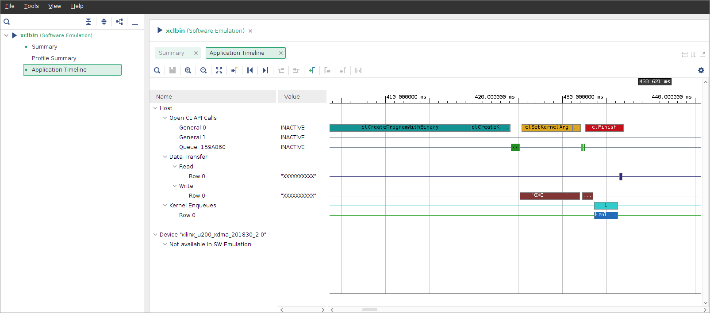
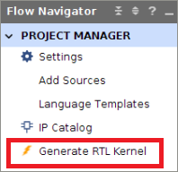
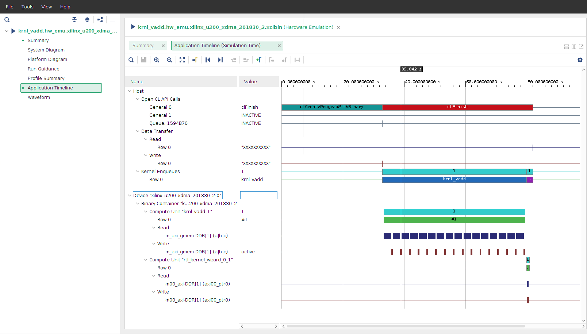

Hardware Acceleration TutorialsSee Vitis™ Development Environment on xilinx.com |
Mixing C++ and RTL Kernels¶
Version: Vitis 2022.1
Introduction¶
In the Vitis™ core development kit, an application program is split between a host application and hardware accelerated kernels. The host application is developed in C/C++ with OpenCL™ API calls. The hardware kernels, on the other hand, can be developed in C/C++, OpenCL C, or RTL. In fact, the Vitis core development kit applications can use any combination of kernels developed in the different languages. The host code is indifferent to how the kernel was developed; it uses the same function call.
Tutorial Overview¶
This tutorial demonstrates an application using two kernels, one designed in C++ and the other designed in RTL, with the host code accessing the kernels in an identical manner.
This tutorial is split into two parts:
In the first part, you will build an application (host and kernel) with one C++ based kernel. The host code, including the kernel function call, is reviewed.
In the second part, an RTL-based kernel will be added to the application. The updated host code, including the function call to the additional kernel, is reviewed.
During both parts, the application is built using a Makefile. Software emulation is run in step one and hardware emulation is run in step two. In both steps, the generated Application Timeline will be reviewed to highlight the kernels being called and run by the host application.
The host code and C++ kernel code are supplied. The RTL code will be generated using the RTL Kernel Wizard.
Before You Begin¶
This tutorial uses:
BASH Linux shell commands.
2021.2 Vitis core development release and the xilinx_u200_gen3x16_xdma_2_202110_1 platform. If necessary, it can be easily extended to other versions and platforms.
IMPORTANT:
Before running any of the examples, make sure you have installed the Vitis core development kit as described in Installation in the Application Acceleration Development flow of the Vitis Unified Software Platform Documentation (UG1393).
If you run applications on Xilinx® Alveo™ Data Center accelerator cards, ensure the card and software drivers have been correctly installed by following the instructions on the Alveo Portfolio page.
Before running any of the examples, ensure you have set up the Vitis core development kit by running the following commands.
#setup Xilinx Vitis tools, XILINX_VITIS and XILINX_VIVADO will be set in this step. source <VITIS install path>/settings64.sh. for example:
source /opt/Xilinx/Vitis/2022.1/settings64.sh
#Setup runtime. XILINX_XRT will be set in this step
source /opt/xilinx/xrt/setup.sh
Accessing the Tutorial Reference Files¶
To access the reference files, type the following into a terminal:
git clone https://github.com/Xilinx/Vitis-Tutorials.Navigate to the
Hardware_Acceleration/Feature_Tutorials/02-mixing-c-rtl-kernelsdirectory, and then access thereference-filesdirectory.
Building an Application with C++ Based Kernel¶
In this step, you will build an application, consisting of host code and a C++ kernel using a makefile. For an overview on building an application, refer to the Vitis Getting Started Tutorial lab.
C++ Based Kernel¶
The C++ based kernel adds two input vectors and generates the output result. The source code is found in the following directory.
./reference-files/src/kernel_cpp/
The makefile will build this kernel and add it to the hardware platform (xclbin), which can be accessed by the host code.
Host Code¶
The host code for step 1 (host_step1.cpp) can be found in the following directory.
./reference-files/src/host/
It sets up the platform and defines global memory buffers and connections to the kernel. The following four important sets of OpenCL API calls in the host code are described. To view these calls, open the host_step1.cpp file.
The first set of code, on lines 189-191, creates the program to execute. It uses the binary container, which contains only the C++ based kernel.
cl::Program::Binaries bins; bins.push_back({buf,nb}); cl::Program program(context, devices, bins);
The second set of code, on line 195, gets the C++ krnl_vadd kernel object from the program, and assigns the name krnl_vector_add. It allows the kernel to be used by the host.
cl::Kernel krnl_vector_add(program,"krnl_vadd");
The third set of code, on lines 213-216, assigns the krnl_vector_add kernel arguments to the buffers.
krnl_vector_add.setArg(0,buffer_a); krnl_vector_add.setArg(1,buffer_b); krnl_vector_add.setArg(2,buffer_result); krnl_vector_add.setArg(3,DATA_SIZE);
The argument numbers 0, 1, 2, and 3 match the argument order in the
krnl_vadddefinition found inkrnl_vadd.cppas follows.NOTE: Arguments
aandbare inputs, andcis an output.void krnl_vadd( int* a, int* b, int* c, const int n_elements)
Finally, on line 220, the following OpenCL API launches the krnl_vector_add kernel.
q.enqueueTask(krnl_vector_add);
For complete details on host code programming, refer to Developing Applications in the Application Acceleration Development flow of the Vitis Unified Software Platform Documentation (UG1393).
Build the Application¶
To build the application targeting software emulation, run the following makefile command from the
./reference-filesdirectory.make all TARGET=sw_emu LAB=run1
This builds both the host software and hardware binary targeted to software emulation. The makefile will also generate the platform JSON emulation file to use during emulation.
Run Emulation¶
During emulation, you gather application timeline data, consisting of host and device events, which can be reviewed after emulation has completed on a common timeline. The Application Timeline data collection must be enabled before running the emulation by setting opencl_trace=true option in an xrt.ini file found in the ./reference-files directory.
[Debug]
opencl_summary=true
opencl_trace=true
data_transfer_trace=fine
To run software emulation on the design, set the XCL_EMULATION_MODE environment variable and run the host application with the device binary:
export XCL_EMULATION_MODE=sw_emu
./host krnl_vadd.sw_emu.xilinx_u200_gen3x16_xdma_2_202110_1.xclbin
When the application successfully completes, the following message is displayed in the Console window.
TEST WITH ONE KERNEL PASSED
Review the Application Timeline¶
Review the Application Timeline generated during software emulation to visualize the host events and the kernel running.
To view the Application Timeline, use the Vitis analyzer by running the following command from within the
run1directory.vitis_analyzer xclbin.run_summary
Click on the Application Timeline option on the left to bring up the Application Timeline. 
After reviewing, close the Application Timeline window.
NOTE: A CU is an instantiation of the kernel on the FPGA.
Putting it All Together¶
For step 1, the following steps were performed. All commands are run in the ./reference-files directory:
# Build the application
make all TARGET=sw_emu LAB=run1
# Set XCL_EMULATION_MODE environment variable for software emulation
export XCL_EMULATION_MODE=sw_emu
# Run software emulation
./host krnl_vadd.sw_emu.xilinx_u200_gen3x16_xdma_2_202110_1.xclbin
# View Application Timeline Trace in Vitis Analyzer
vitis_analyzer xclbin.run_summary
Building an Application with C++ and RTL-Based Kernels¶
Now that you have successfully built and run an application with a C++ based kernel, update the application to include an RTL-based kernel.
Similar to the previous section, you will build, emulate, and review the generated Application Timeline. Regardless of how the kernels were designed, as HLS C/C++ kernels or as RTL kernels, after the kernel has been built the host application accesses the accelerated kernels through the same function calls.
RTL-Based Kernel¶
First, you will create and package an RTL-based kernel using the RTL Kernel Wizard. By default, the wizard creates a kernel to increment by one. This kernel will be used in this tutorial. Additionally, the wizard automates the steps needed to package the RTL design into a kernel object file (XO).
You will generate the RTL-based kernel by quickly going through the RTL Kernel Wizard steps (at a high-level). Review the Getting Started with RTL Kernels tutorial for more information. For complete details refer to RTL Kernels in the Application Acceleration Development flow of the Vitis Unified Software Platform Documentation (UG1393).
Create the Vitis Project¶
To open the Vitis IDE, enter
vitisin the command line.Select ./mixing-c-rtl-kernels/workspace as the workspace directory, and click Launch.
From the
Welcomescreen select Create Application Project to open theNew Projectwizard.The first page displays a summary of the process. Click Next to proceed.
From the
Platformpage select the xilinx_u200_gen3x16_xdma_2_202110_1 platform and click Next.From the
Application Project Detailspage, name your projectrtl_projectand click Next.Under SW Acceleration Templates, select Empty Application, and click Finish. This creates a Vitis IDE project.
Next, generate an RTL-based kernel from within the Vitis IDE.
Select the menu command Xilinx > Launch RTL Kernel Wizard > rtl_project_kernels. This opens the RTL Kernel Wizard Welcome page.
The first page is a summary of the process. Review it and click Next.
In the General Settings dialog box, keep all the default settings, and click Next.
In the Scalars dialog box, set the number of scalar arguments to
0, and click Next.In the Global Memory dialog box, keep all the default settings, and click Next.
In the Streaming Interfaces dialog box, keep all the default settings, and click Next.
The Summary dialog box is displayed and provides a summary of the RTL kernel settings and includes a function prototype which conveys what a kernel call would look like as a C function.Click OK.
The RTL Kernel source files have now been created.
The Vivado Design Suite Project¶
At this point, the Vivado Design Suite opens a project automatically with the generated RTL code corresponding to the default A = A + 1 function. You can navigate to review the source files or even run RTL simulation. However, for this tutorial, you will not be modifying the default RTL Kernel and will only package into an object file (.xo).
In Flow Navigator, click Generate RTL Kernel.
In the Generate RTL Kernel dialog box, select the Sources-only packaging option.
For Software Emulation Sources, you can add a C++ model of the RTL kernel, which is used for Software Emulation.
The C++ model must be coded by the design engineer. Typically, there is no C++ model available, and Hardware Emulation is used to test the design. Because the RTL Wizard creates a C++ model of the vadd design, the steps to add this file are also provided below.
Click the Browse command (
...).Double-click the
importsdirectory.Select the
rtl_kernel_wizard_0_cmodel.cppfile and click OK.To generate the RTL kernel, click OK.
After the RTL kernel has been generated successfully, click Yes to exit the Vivado Design Suite, and return to the Vitis IDE.
A message window displays some information related to the generated RTL kernel. Review it and click OK.
Exit the Vitis IDE.
At this point, you have packaged the RTL kernel into the following object file, rtl_kernel_wizard_0.xo found in the following directory.
./02-mixing-c-rtl-kernels/workspace/rtl_project_kernels/src/vitis_rtl_kernel/rtl_kernel_wizard_0
Host Code Updates¶
To access the RTL-based kernel, the host code needs to be updated. The updates have been done in the host_step2.cpp file located in the following directory.
./reference-files/src/host/
The updates includes additional OpenCL API calls briefly described below. The additional OpenCL API calls are identical to the ones used for the C++ based kernel with the arguments changed for the RTL-based kernel.
cl::Program::Binaries bins;
bins.push_back({buf,nb});
cl::Program program(context, devices, bins);
The following code gets the rtl_kernel_wizard_0 object from the program and assigns the name krnl_const_add on line 198. The rtl_kernel_wizard_0 object name matches the name of the kernel you generated with the RTL Wizard.
cl::Kernel krnl_const_add(program,"rtl_kernel_wizard_0");
Next, define the krnl_const_add kernel arguments on line 219.
NOTE: In the host code, the buffer
buffer_resultis passed directly from the C kernel to the RTL kernel through DDR without being moved back to the host memory.
krnl_const_add.setArg(0,buffer_result);
Launch the krnl_const_add kernel on line 222.
q.enqueueTask(krnl_const_add);
Build and Emulation with C++ and RTL Based Kernels¶
With the RTL-based kernel added and host code updated, build the application, targeting hardware emulation through the updated makefile in the run2 directory. The makefile has been updated to add both the CPP and RTL-based kernels to the hardware platform file (xclbin).
Navigate to the
./02-mixing-c-rtl-kernels/reference-filesdirectory.To build the application targeting hardware emulation, run the following makefile from the
./reference-filesdirectory.make all TARGET=hw_emu LAB=run2
As before, run emulation, and generate and review the Application Timeline by running the following commands from within the
./reference-filesdirectory.Set XCL_EMULATION_MODE environment variable for hardware emulation, and run the application.
export XCL_EMULATION_MODE=hw_emu ./host krnl_vadd.hw_emu.xilinx_u200_gen3x16_xdma_2_202110_1.xclbin
View the Application Timeline report in the Vitis analyzer.
vitis_analyzer xclbin.run_summary
Under Device>Binary Container, traverse along the timeline and zoom in.
You will now see both CUs, krnl_vadd_1 and rtl_kernel_wizard_0_1, show as running.
After reviewing, close the Application Timeline, and exit Vitis analyzer.
Vitis core development kit applications can use any combination of kernels, regardless of the language they were developed in.
Because a CPP emulation file was packaged with the RTL Kernel (through the RTL Wizard), you can also run software emulation. To run software emulation, you can use the following steps:
# Build the application
make all TARGET=sw_emu
# Set XCL_EMULATION_MODE environment variable for software emulation
export XCL_EMULATION_MODE=sw_emu
# Run software emulation
./host krnl_vadd.sw_emu.xilinx_u200_gen3x16_xdma_2_202110_1.xclbin
# Open Vitis analyzer and view the timeline waveform
vitis_analyzer xrt.run_summary
Next Steps¶
With the understanding that Vitis compiler can use kernels from a variety of build sources, perhaps you would be interested in seeing some special designs implemented using the Vitis application acceleration development flow. If so, proceed to Hardware Accelerator Design Tutorials.
Copyright© 2021-2022 Xilinx